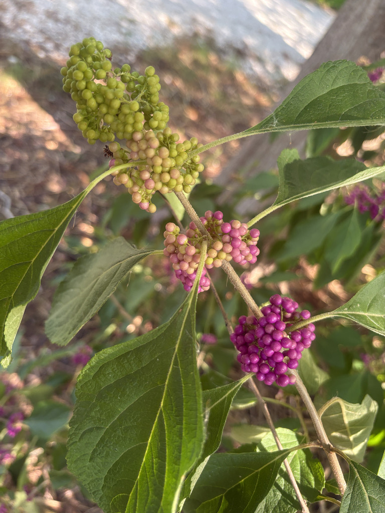

- The name does what plant names rarely do — it tells you exactly what you will see. Callicarpa is Greek for beautiful fruit. When the berries are on, the name is self-evidently correct. Kids remember it.
- Crush a leaf and rub it on your skin. The compound released — callicarpenal — is a documented mosquito repellent comparable in effectiveness to DEET. This was rural Southern folk knowledge for generations before the laboratory confirmed it.
- Over 40 bird species eat the berries, including migratory thrushes and catbirds refueling in fall. The berries persist into winter when other food sources are gone.
- Sits next to the Wax Myrtle and Fakahatchee Grass along the pond. Of the three, it is the one the kids remember.
Native throughout Florida and the eastern United States from Maryland to Texas. Found naturally in hammocks, forest edges, and disturbed areas. Member of the mint family (Lamiaceae) — the same family as basil, rosemary, and the park's own Wax Myrtle.
- The berries are a saturated magenta-purple that reads as almost artificial, which is part of why they stop people. Dense clusters encircle the stems at leaf nodes, so a shrub in full berry looks like it has been decorated rather than grown that way. The effect is especially strong in fall after the leaves begin to drop.
- The mosquito repellent use is the detail that tends to land hardest with visitors, particularly kids. The compound callicarpenal, found in the leaves, was long used by rural Southerners and Native Americans who crushed the leaves and rubbed them on skin and horses to repel biting insects. USDA research has since confirmed the effectiveness — comparable to DEET in laboratory testing.
- The plant is right there. Crush a leaf and try it.
- Beautyberry sits alongside the Wax Myrtle and Fakahatchee Grass near the pond. Ask a group of students to name the plants they learned that day, and Beautyberry is usually the one that comes back. Wax Myrtle and Fakahatchee Grass, despite being excellent plants, do not have that advantage.
- At least 40 species of birds eat the berries, including mockingbirds, cardinals, brown thrashers, robins, and catbirds. Raccoons, foxes, and white-tailed deer also feed on them. The berries persist into winter, providing food when most other native shrubs have finished.
One of the more productive wildlife shrubs in the Florida native plant palette. More than 40 bird species eat the berries — including migratory thrushes and catbirds passing through in fall — along with raccoons, foxes, and deer. The berries persist into winter, which matters when other food sources are depleted.
Summer flowers are small, tubular, and pink to lavender — attractive to bees and native pollinators. The arching branch structure provides cover and nesting opportunities for small birds.
The leaves are also directly useful to people: crushed and rubbed on skin, they release callicarpenal, a documented insect repellent. This is an interaction visitors can have with the plant on the spot.
Small, tubular, pink to lavender, appearing in clusters at leaf nodes in summer. Inconspicuous individually but plentiful. Attract bees and native pollinators.
Dense clusters of brilliant magenta-purple berries encircling the stems at leaf nodes. Appear in late summer, persist through fall and into winter. A rarer white-berried variety (var. lactea) exists but is uncommon.
Opposite, ovate to elliptic with finely toothed margins. Light green, rough-textured, slightly fuzzy. Aromatic when crushed — releasing callicarpenal, a mosquito repellent compound. Stems are square in cross-section, the mint family signature.
Arching, multi-stemmed shrub, 3 to 8 feet tall and wide. Fast-growing. Deciduous, though in South Florida may retain leaves year-round.
The berry clusters in fall are unmistakable — dense magenta-purple encircling the stems at regular intervals. Crush a leaf to confirm with the aromatic scent. Square stems are a reliable year-round ID feature shared with all mint family members.
The berries are edible but astringent — better made into jelly than eaten raw — and the leaves are used as a spice. It isn't a significant food plant.
It's low-toxicity to people and not listed as toxic to dogs or cats, though a large quantity of berries may cause mild stomach upset.
NOMENCLATURE: Callicarpa was historically placed in Verbenaceae but is now classified in Lamiaceae (the mint family) following molecular phylogenetic revisions to the order Lamiales. Older signage and references may still show Verbenaceae.


- © Maria Escobar (CC-BY-NC), via iNaturalist
- © Denise Sosa (CC-BY-NC), via iNaturalist
- © Lilah Thomas (CC-BY-NC), via iNaturalist